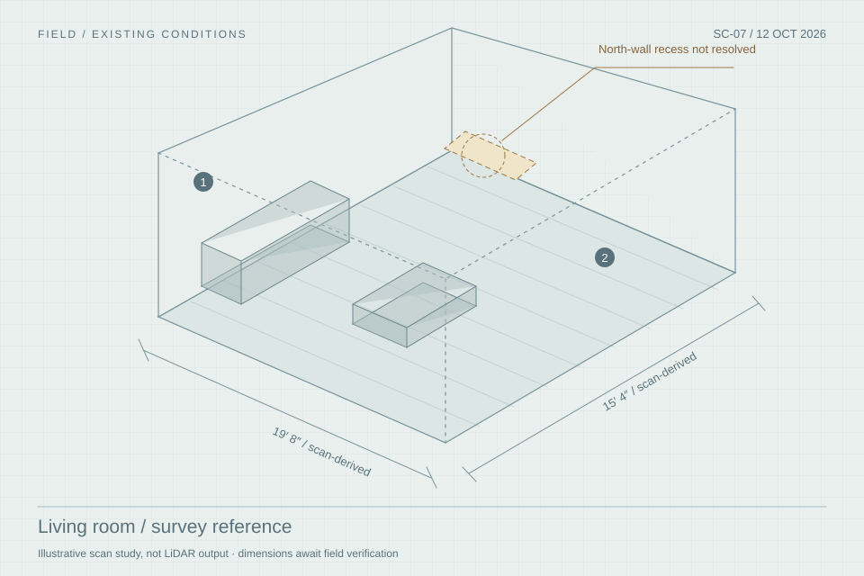

Three separately prompted design-agent perspectives, public studio processes and current portal source informed this round. No practicing designers were interviewed. These are hypotheses for review, not user validation.
Simulated practice review01
The same paper. Different definitions of done.
We asked three separate agents to challenge round five through different residential practice lenses. The observations below are synthesized critiques, not quotations from real designers.
F
Full-service studio principal
Simulated perspective
Keep the room’s reasoning with the work.
The scan → concept → exact drawing → item → site question is convincing. The 36-line sheet and return to the same place remain strengths.
Challenge
A project cannot have one useful phase when one room is ordering, another is on site and a third is handed over.
Adaptation: room and work-package progress.
D
Solo / design-only practice
Simulated perspective
The paper should describe the service bought.
A consultation can end with an advice record. A design package can be complete before the client orders anything.
Challenge
Empty purchasing and Field chapters could make successful advisory work look abandoned.
Adaptation: service-specific delivery and closure.
B
Renovation / building-team designer
Simulated perspective
Keep the exact copy someone is acting on.
Issued drawings and Field returns belong beside the room. Site work also needs packages that cross room boundaries.
Challenge
A design answer can affect price, programme and another professional’s work. A reply is not automatically an instruction.
Adaptation: responsibility and change records.
Where the perspectives pull apart
A full-service studio needs more operational detail. A consultation needs less. Our proposed direction is agreed scope with optional depth: the same document grammar, different obligations. A studio label must never decide what a particular client has purchased.
Three disagreements to take to real designers
Should the working index lead with rooms or cross-room packages on a building project?
Should an advisory job show excluded purchasing work in a fold, or omit it entirely from the working view?
Does client-reported implementation help a design-only studio, or suggest responsibility it did not accept?
Our current answer is a stable room paper with package links and explicit scope. These choices remain unvalidated.
Lead to final handoff02
Four examples. No universal conveyor belt.
Choose a way of working, then a moment in the job. These are proposed Patina flows. The order adapts to the service: design delivery precedes client implementation. Work can overlap, repeat or end early.
Design through installation
Success looks like
The example selection is linked to the paper study below. Its moments are illustrative, not completion gates.
1
What comes in
What makes the next act possible
How the paper adapts
Published practice context Links open a new tab
There is also a legitimate “not now.”
Qualification can end in a referral, decline or a dated follow-up. A live engagement can pause, reduce scope or add a phase. Preserve the brief and decisions; record the next owner and review date. If an engagement ends early or is disputed, retain open orders, deposits and unresolved obligations under the actual agreement. Stopping new work does not cancel existing commitments.
The adaptable paper03
Begin with the promise. Unfold the work it requires.
An engagement slip near the cover states the service outcome. The room stays visual. Working detail opens in place. Try the linked examples below. These are alternative arrangements for the same illustrative home, not simultaneous scopes or edits to the portal.
Example reference: AG-01 / 14 October 2026 (fictional). This summary reads from the agreed instrument; it does not replace it. Client copies show their agreed terms; Field copies omit client pricing and internal commercial detail.

Existing conditions / provenance retainedDrawing / purpose and edition retained
Unfold the working detail
Communication stays attached. Private notes, client decisions and field questions retain their author, date, audience and related item or drawing.
This is a proposed placement. The production action is not implemented here.
Start lightly. A lead begins with a brief and next conversation, not an empty installation plan.
Stay findable. Out-of-scope work appears in the agreement fold. Existing records are never deleted or hidden by changing the view.
Change deliberately. A new scope records affected deliverables, fees, dates and explicit agreement before new commitments.
Example terms and dates are fictional. The workflow and paper selectors are linked; selecting either changes both illustrations. It creates no appointment, payment condition or permission.
One home, several ways of working04
The real test is the mixed job.
This separate mixed-job scenario has four different pieces of work. Keep one job paper and a stable chapter index. Let the margin surface the next decision; let the room tell its own state. Leah is the designer, Sam the carpenter and Ana the GC.
Lake Mendota House / illustrative extension
What is moving. What is waiting.
Pinned next act: Leah to resolve the console measure. Designer-pinned coordination hold · other work continues.
Different room states within one engagement record
Room / work
Design service
Implementation owner
Next act / completion
Living room 36 FF&E lines
Developing detail; furnishings ordering
Studio for agreed furnishings; custom scope to confirm
Console held Verify north-wall clearance before its order placement.
Study
Package delivered, 22 Oct
Client buys and arranges install
Design delivered Support through 5 Nov; client installation not tracked as studio work.
Kitchen
Site coordination
GC buys and builds its scope
Question due Ana to confirm kitchen outlet position (KQ-02); designer assesses drawing impact.
Entry
Handed over
Studio + supplier for remaining claim
1 obligation Mirror replacement; Leah owns next update, 29 Oct.
Ownership belongs on the line.
The dense FF&E sheet keeps its operational depth. A compact responsibility column prevents a client purchase, a GC allowance or an existing heirloom from being treated as a studio order.
Selected → client reports purchase → delivery unconfirmed. No studio PO or deposit.
K-07 / TileGC purchase
Design selection → GC pricing / order placement → site confirmation. Design agreement alone does not instruct the GC.
LR-08 / Inherited chairRetain / existing
Condition and dimensions recorded. No purchase required; reupholstery can be a separate scope.
When one buying owner is not enough
Unfold payer, purchaser of record, receiver and installer separately. For the client-bought lamp, Nora pays and purchases; a studio-appointed receiver or installer is included only if separately agreed.
A studio order using the client’s own fabric also records who supplies the material, who verifies quantity/fit and what must arrive before production. Client payment through a studio trade account does not by itself identify the purchaser of record.
A package can cross rooms
The joinery set.
Gather the living-room console and kitchen joinery sheets into one named set without copying their records. Each room points back to the same package; the client’s study package remains separate.
What Sam holds
A-201/B · information issue
Studio current
A-201/C · not issued to Sam
Who may instruct work
Studio engages Sam for living-room verification only; console fabrication is unassigned and held. Ana engages and directs the kitchen joinery under the GC scope. The shared information set authorizes neither package.
Before the next act
Site verification, scope / price review, then a drawing issue and any separately required fabrication go-ahead.
Continuity with round five. A current drawing never silently replaces a recipient’s held copy.
Keep the conversation where the decision lives.
ObservationSam’s living-room outlet question (OBS-07), attached to A-201/B.
AssessmentLeah identifies affected dimensions, cost, timing and rooms.
DecisionThe named party accepts the relevant change; unrelated approvals stand.
RecordA new issue or order change is explicit. The original remains readable.
GC-led remodels and design-build teams can use the same record without an architect where none is appointed. Assign responsibility from the actual appointments, including who may instruct work.
Studio notes stay private. Client copies show the decisions they own. Field copies show the applicable scope and issued information. A viewing role never establishes authority.
Finishing well05
A handoff is a transfer of useful information.
The final packet depends on the engagement. Delivery, acknowledgement, acceptance, financial closeout and physical completion are different facts. Residual obligations keep an owner and a next date.
Advice record
A consultation can be complete.
Question and recommendations
Assumptions and limits of advice
Promised follow-up and next steps
Delivery and service record
No fabricated installation requirement.
Design edition
A design can be delivered before it is installed.
Exact drawings and selected items
Dated buying references and fit notes
Client responsibilities and open assumptions
Revision / support arrangement
Client implementation may continue.
Room & care book
A home can be handed over with work still owned.
Applicable installed / record information
Care, warranties and responsible contacts
Acceptance and financial reading
Open defects, owners and next updates
One replacement need not erase the handoff.
A situation to test
“The chair is unavailable. Can you find another?”
Six weeks after a design package was delivered, the client asks for help. The original edition stays intact. Open the possible responses to see how scope stays legible.
Clarification or correction
Explain the delivered guidance or correct an error. Link the answer to the original line. The studio classifies the work; the system does not automatically consume a revision or create a charge.
Included support or revision
Check the actual allowance and support period. Develop an alternate and record its new decision. The original item’s approval, price and fit assumptions do not transfer automatically.
Additional work proposed
Outline the new help, fee basis and likely timing. Record agreement before undertaking the added scope. Keep the completed service closed unless deliberately amended.
These are workflow proposals, not standard contract terms. The studio’s agreement determines obligations. Open punch items inform closeout in the current source; this proposal does not add a blanket “zero punch” gate. Source: care-band.tsx:140–142. Handoff does not itself close the studio’s obligations or accounts.
What we recommend06
Adapt the obligations. Keep the document.
The next design round should test a small number of consequential changes. The current visual direction, dense working sheet and contextual return remain the foundation.
At the front
An engagement slip
Outcome, deliverables, fee basis, buying/building owners and completion criteria. Expand from the brief as the relationship develops.
Tradeoff: a little setup avoids a great deal of false work later.Through the work
Room and package responsibility
Next act, owner and dependency by room or package. Purchasing responsibility at the line level. Cross-room packages reference the same records.
Tradeoff: richer state must read as a sentence, not a wall of badges.At the finish
A scoped handoff
Frozen delivered editions, separate service and implementation states, named residual obligations and a route for subsequent questions.
Tradeoff: completion needs several precise facts, not one green “done.”
Do not lock the job to a practice type.
Use examples to help a studio start, then confirm the actual arrangement. Buying owner, builder, fee basis, phasing, revision allowance and support term are independent choices. A later change must preserve history and prompt the affected commercial and delivery decisions.
The next real-designer review
Proposed recruitment: six practitioners, two primarily full-service, two primarily advisory/design-only and two primarily renovation coordination. At least one of those six should also run mixed-service jobs. This is a formative study, not a representative sample. No interviews have been scheduled.
Bring a recent job. With consent, use a redacted recent job to trace inquiry, scope, a difficult decision and the actual endpoint. Ask what happened, before showing this proposal.
Run the exceptions. Client-bought lamp; a drawing change after issue; one room handed over with a replacement pending.
Watch the paper. Can they identify who acts next, which edition applies and what ends their service? Can they close a fold and regain their place?
Revise from evidence. Capture missed steps, wrong assumptions and role ambiguity. Treat task failure as a design finding, not user error.
Evidence & boundaries07
What informed this. What it does not prove.
Published service descriptions show that different arrangements exist. The simulated panel supplies critique. Neither establishes how often a workflow occurs or whether this interface will work in practice.
Published practice examples
Full service
Justine Sterling’s process separates engagement, documentation, purchasing, installation, deficiencies and final accounting. Studio Ness describes care and support after installation.
Caroline Myers offers ongoing design-only and a bounded virtual package. Amy Elizabeth assigns buying and trades to the client in its design-only service.
BIID treats the brief as evolving, with responsibility and communication explicit. RIBA’s building-project framework extends to handover and use. These UK references inform the comparison; they are comparison references, not a universal residential service model or local legal guidance.
Three separately prompted agent contexts reviewed the full-service, advisory and construction lenses. Their separate contexts do not establish independent practitioner validation. Claude Code performed an independent critique of this presentation. Dispositions are recorded in the collaboration notes.
This is a residential workflow study, not a commercial/hospitality, regulated-design or construction-management specification. No live data, product code, permissions, contracts, payments or external communications were changed. Interactive choices only demonstrate presentation states; the earlier prototype is preserved.